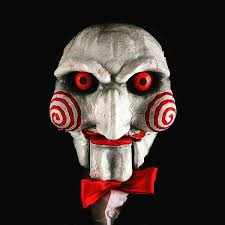

Want to Play a Game?.....(Click Here)

00:00
Ready to Take the Test?, Press This Button!
Jeff Bridges and John Goodman were both in the Big Lebowski - T or F?
True
False
Meditation is a great option for stress relief. - T or F?
True
False
IPA is the greatest craft beer style. - T or F?
True
False
10 < 20 - T or F?
True
False